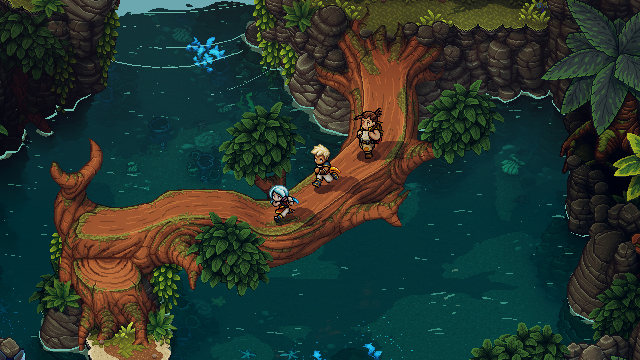

Engaging Turn Based Combat
Pressing the action button in sync with the animations increases damage output while reducing incoming damage.
Along with timed hits, combat features multi-character combo attacks, boosting, and a strategic « locks » system offering options to play with different damage types in order to hinder enemies while they are channeling powerful attacks or spells, all in an immersive take on the genre; no random encounters, no transitions to separate battlefields, and no grinding.
Along with timed hits, combat features multi-character combo attacks, boosting, and a strategic « locks » system offering options to play with different damage types in order to hinder enemies while they are channeling powerful attacks or spells, all in an immersive take on the genre; no random encounters, no transitions to separate battlefields, and no grinding.

A story rich adventure
Dozens of original characters and story arcs will take you on a captivating journey. Sometimes epic, sometimes silly, and other times emotional, Sea of Stars does its RPG duty of exploring classic themes of adventure and friendship, while also being chock-full of the unexpected twists and events you'd expect from a Sabotage production.

Unshackled Traversal
Swim, climb, vault, jump off or hoist up ledges as you traverse seamlessly through the world with a navigation system based on platformer expertise that breaks free from the classic bound-to-the-grid tileset movement.

A world you can touch
There are many ways to hang out in the world of Sea of FTars if you feel the need for a change of pace in your adventures.
Sailing, cooking, fishing, stopping by a tavern to listen to a song or play the infamous tabletop game known as « Wheels »…..every system has been designed to deliver an experience that pays respect to retro classics, while rethinking in some areas to offer a smooth and modernized experience.
Sailing, cooking, fishing, stopping by a tavern to listen to a song or play the infamous tabletop game known as « Wheels »…..every system has been designed to deliver an experience that pays respect to retro classics, while rethinking in some areas to offer a smooth and modernized experience.